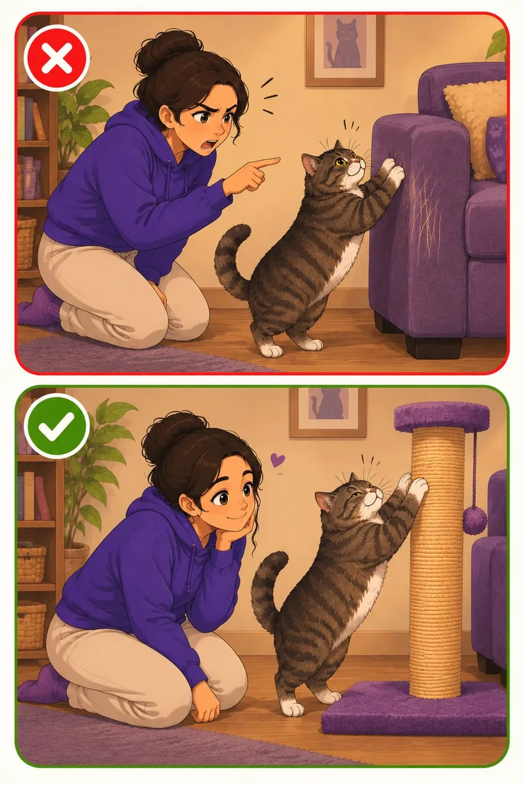

Списки и памятки
Чек-листы
Ничего не забыть в важные моменты.
10 списковГотовы к печати

Тематические памятки
Поездка в ветеринарную клинику9 пунктов • Ветеринарный паспорт, Переноска, Впитывающая пелёнка, Любимое лакомств…Появление первого котёнка59 пунктов • Установить сетки «Антикошка» на окна., Защитить режим окна «вертикальн…Знакомство двух кошек10 пунктов • Отдельная комната, Второй-третий лоток, Отдельные миски, Отдельная леж…Переезд в новую квартиру6 пунктов • Обновить адрес на жетоне/ошейнике, Подготовить переноску, Запастись ко…Путешествие11 пунктов • Паспорт, Чип, Прививки, Справки, Переноска, Вода, Корм и снеки, Пелёнк…После операции6 пунктов • Контролировать наличие попоны/воротника, Дать лекарства, Проверить шов…Вакцинация6 пунктов • Кошка должна быть здорова, Ветеринарный паспорт, Записано время приёма…Отъезд хозяина6 пунктов • Корм, Вода, Лоток, Игрушки, Контакты человека, который будет приходить…Экстренная аптечка23 пунктов • Ветеринарный паспорт, Контакты лечащего ветеринара, Адрес ближайшей кр…Животное из приюта или заводчика — важные вопросы9 пунктов • Привычный корм и график кормления. Резкая смена ведёт к поносу и пробл…
Пример: Поездка в ветеринарную клинику
Распечатать- Ветеринарный паспорт
- Переноска
- Впитывающая пелёнка
- Любимое лакомство
- Лекарства (если принимает)
- Последние анализы
- Видео симптомов (если есть)
- Список вопросов врачу
- Записи поведения кота за последние несколько дней
Всегда под рукой
Все чек-листы — в приложении Cat First
Под рукой в любой момент — даже без интернета.
Не заменяет ветеринара
Информация в приложении собрана из открытых источников и опыта владельцев кошек. Она не заменяет консультацию и осмотр у ветеринара. Решения о здоровье и уходе за питомцем принимает владелец — при любых сомнениях обратитесь к ветеринару.